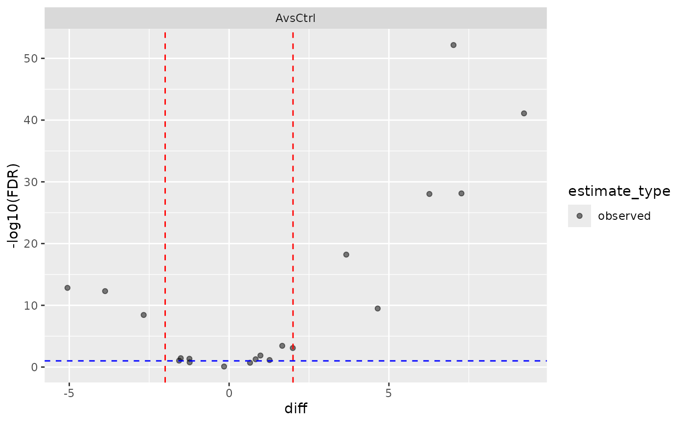

ROPECA V2: median peptide z-score with a correlation-aware null
Source:R/ContrastsROPECA.R
ContrastsROPECAV2.RdSummarises peptide-level contrasts per protein like ContrastsROPECA,
but tests the median peptide z-score against its exact null distribution: the
median of n standard normal scores with pairwise correlation rho. The
protein p-values are uniform under the null for any number of peptides, and
correlated peptides do not make proteins with many peptides more significant.
ContrastsROPECAV2NestedFacade estimates rho from the peptide
model residuals.
Each peptide t-statistic is converted to the standard normal score with the
same tail probability. diff is the median peptide fold change,
statistic the normal score with the protein's two-sided p-value,
std.error = |diff / statistic|, df = Inf, and
conf.low, conf.high the matching normal 95% interval;
sigma is the MAD of the peptide fold changes.
See also
Other modelling:
AnovaExtractor,
Contrasts,
ContrastsDEqMSFacade,
ContrastsDEqMSVoomFacade,
ContrastsFacadeBase,
ContrastsFirth,
ContrastsFirthFacade,
ContrastsHurdleFacade,
ContrastsHurdleNestedFacade,
ContrastsLMFacade,
ContrastsLMImputeFacade,
ContrastsLimma,
ContrastsLimmaFacade,
ContrastsLimmaImputeFacade,
ContrastsLimmaVoomFacade,
ContrastsLimmaVoomImputeFacade,
ContrastsLimpaFacade,
ContrastsLimpaNestedFacade,
ContrastsLmerNestedFacade,
ContrastsModerated,
ContrastsModeratedDEqMS,
ContrastsPlotter,
ContrastsRLMFacade,
ContrastsROPECA,
ContrastsROPECANestedFacade,
ContrastsROPECAV2NestedFacade,
ContrastsRfitFacade,
ContrastsRfitImputeFacade,
ContrastsTable,
INTERNAL_FUNCTIONS_BY_FAMILY,
LR_test(),
Model,
ModelFirth,
ModelLimma,
StrategyLM,
StrategyLimma,
StrategyLimpa,
StrategyLmer,
StrategyLogistf,
StrategyRLM,
StrategyRfit,
build_contrast_analysis(),
build_model(),
build_model_glm_protein(),
build_model_impute(),
build_model_limma(),
build_model_limma_impute(),
build_model_limma_voom(),
build_model_limma_voom_impute(),
build_model_limpa(),
build_model_logistf(),
compute_borrowed_variance(),
compute_borrowed_variance_limma(),
compute_contrast(),
compute_lmer_contrast(),
df.residual.rfit_prolfqua(),
get_anova_df(),
get_complete_model_fit(),
get_p_values_pbeta(),
group_label(),
impute_from_model(),
impute_refit_singular(),
linfct_from_model(),
linfct_matrix_contrasts(),
list_facades(),
lookup_facade(),
merge_contrasts_results(),
model_analyse(),
model_summary(),
moderated_p_deqms(),
moderated_p_deqms_long(),
moderated_p_limma(),
new_imputed_model(),
nobs.rfit_prolfqua(),
pivot_model_contrasts_to_wide(),
prolfqua_analysis_methods,
register_facade(),
sigma.rfit_prolfqua(),
sim_build_models_lm(),
sim_build_models_lmer(),
sim_build_models_logistf(),
sim_make_model_lm(),
sim_make_model_lmer(),
strategy_limma(),
strategy_limpa(),
strategy_logistf(),
summary_ROPECA_median_p_scaled(),
vcov.rfit_prolfqua()
Super class
ContrastsInterface -> ContrastsROPECAV2
Public fields
Contrastpeptide-level contrasts, e.g.
ContrastsModeratedrhocorrelation of the peptides of a protein
contrast_resultcontrast result
model_namemodel name
subject_idpeptide-level subject columns; the protein columns are all but the last
p.adjustmethod to use for p.value adjustment
Methods
Inherited methods
ContrastsROPECAV2$new()
initialize
Usage
ContrastsROPECAV2$new(
Contrast,
rho,
model_name = "ROPECAV2",
p.adjust = prolfqua::adjust_p_values
)ContrastsROPECAV2$get_contrasts()
get protein-level contrasts
ContrastsROPECAV2$to_wide()
convert to wide format
Usage
ContrastsROPECAV2$to_wide(columns = c("p.value", "FDR"))Examples
istar <- sim_lfq_data_peptide_config(Nprot = 20)
#> `protein_Id`: columns `proteinID`, `idtype2` united with separator '~'.
#> creating sampleName from file_name column
#> setup_analysis: dropped 6 unconfigured columns: average_prot_abundance, sd, mean, N, avg_peptide_abd, Replicate.
#> setup_analysis: added 110 rows with NA response for feature and sample combinations absent from the input.
config <- istar$config$clone(deep = TRUE)
config$hierarchy_depth <- 2
mod <- build_model(
istar$data,
strategy_lm("abundance ~ group_"),
subject_id = config$hierarchy_keys_depth()
)
#> fit (Model): 110 missing responses dropped (e.g. 0m5WN4~1448~UwJbtbRY, 0m5WN4~1448~wpHqGLYB, 7cbcrd~8305~O9LMQBev, 9VUkAq~4562~6mb5eKpF, 9VUkAq~4562~AYQOqCVO, ...): NA response (missing observation) left out of the fit
#> See $provenance().
contrasts <- c("AvsCtrl" = "group_A - group_Ctrl")
peptide_contrasts <- ContrastsModerated$new(Contrasts$new(mod, contrasts))
ropeca2 <- ContrastsROPECAV2$new(peptide_contrasts, rho = 0.2)
head(ropeca2$get_contrasts())
#> # A tibble: 6 × 14
#> protein_Id modelName estimate_type contrast avgAbd diff FDR statistic
#> <chr> <chr> <chr> <chr> <dbl> <dbl> <dbl> <dbl>
#> 1 0EfVhX~5954 ROPECAV2 observed AvsCtrl 25.1 9.23 8.17e-42 13.7
#> 2 0m5WN4~1448 ROPECAV2 observed AvsCtrl 18.5 -1.24 4.56e- 2 -2.15
#> 3 7cbcrd~8305 ROPECAV2 observed AvsCtrl 25.7 4.65 3.28e-10 6.43
#> 4 9VUkAq~4562 ROPECAV2 observed AvsCtrl 18.1 0.980 1.35e- 2 2.65
#> 5 At886V~3296 ROPECAV2 observed AvsCtrl 18.1 -2.67 3.66e- 9 -6.03
#> 6 BEJI92~9143 ROPECAV2 observed AvsCtrl 24.6 1.66 3.62e- 4 3.74
#> # ℹ 6 more variables: std.error <dbl>, df <dbl>, p.value <dbl>, conf.low <dbl>,
#> # conf.high <dbl>, sigma <dbl>
ropeca2$to_wide()
#> # A tibble: 20 × 4
#> protein_Id diff.AvsCtrl p.value.AvsCtrl FDR.AvsCtrl
#> <chr> <dbl> <dbl> <dbl>
#> 1 0EfVhX~5954 9.23 8.17e-43 8.17e-42
#> 2 0m5WN4~1448 -1.24 3.19e- 2 4.56e- 2
#> 3 7cbcrd~8305 4.65 1.31e-10 3.28e-10
#> 4 9VUkAq~4562 0.980 8.12e- 3 1.35e- 2
#> 5 At886V~3296 -2.67 1.65e- 9 3.66e- 9
#> 6 BEJI92~9143 1.66 1.81e- 4 3.62e- 4
#> 7 CGzoYe~2857 -1.23 1.53e- 1 1.70e- 1
#> 8 CtOJ9t~2837 7.02 3.52e-54 7.03e-53
#> 9 DoWup2~2934 0.831 4.08e- 2 5.44e- 2
#> 10 DuwH7n~3402 0.655 1.90e- 1 2.00e- 1
#> 11 Fl4JiV~7526 1.27 5.85e- 2 7.31e- 2
#> 12 HC8K98~4958 -1.56 7.72e- 2 9.08e- 2
#> 13 HvIpHG~4015 1.99 4.56e- 4 8.29e- 4
#> 14 I1Jk2Z~0821 -3.88 1.75e-13 5.01e-13
#> 15 JV3Z7t~2956 -5.06 4.48e-14 1.49e-13
#> 16 JcKVfU~0815 -1.51 2.37e- 2 3.65e- 2
#> 17 JfvT8X~2727 3.67 1.54e-19 6.14e-19
#> 18 R2i6w7~0288 6.27 1.85e-29 9.27e-29
#> 19 SGIVBl~9558 7.27 1.12e-29 7.48e-29
#> 20 r2J0Eh~2687 -0.157 8.15e- 1 8.15e- 1
pl <- ropeca2$get_Plotter()
pl$volcano()
#> $FDR

#>